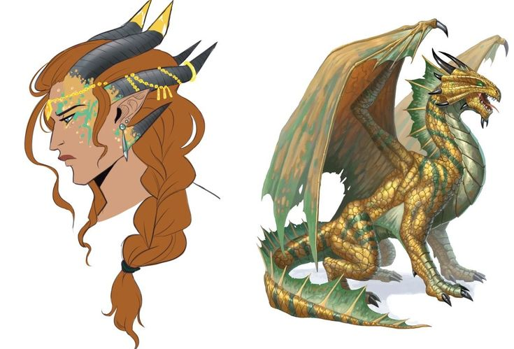
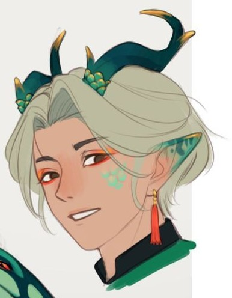

A Dinastia Tnars governa Xuè — e com ela o Reino da Chama Eterna — desde que os filhos de Blae e Esth escolheram, cada um à sua maneira, dar continuidade ao legado dos irmãos dragões. Um trono aceito por dever e uma espada erguida por lealdade: juntos, primos que se tratam como irmãos, sustentam a chama que Icam não conseguiu apagar.
✦ nomenclaturas reais
Os Títulos da Linhagem
ASHENCROWN
Coroa de Cinzas
Título concedido ao Antigo Monarca — aquele que já usou a coroa e a cedeu adiante, deixando para trás apenas o calor do que já ardeu.
EMBERCROWN
Coroa de Brasa
Título do Monarca Atual — a chama que Blae deixou arder agora repousa sobre sua cabeça.
FLAMEGUARD
Guarda da Chama
Título de quem jurou proteger o reino e caçar o que a chama se recusa a esquecer.
STRAYSPARK
Fagulha Solta
Título genérico para quem nasceu do mesmo sangue sem carregar cargo formal dentro da coroa.
✦ O REI

✦ família real tnars
Liang Tnars
Filho de Blae. Não foi escolha sua tornar-se Rei, mas assumiu o dever por acreditar que o pai teria orgulho dele. Uma figura reclusa e distraída, é arrastado pela prima para as aparições públicas — e ainda assim se perde, tentando estender os céus dos dias como o pai um dia fez.
✦ A MARECHAL REAL

✦ família real tnars
Xiu Tnars
Filha de Esth. Apareceu no Palácio Real após atingir a maioridade e assumiu o comando das tropas reais, dedicada a proteger o Reino da Chama Eterna e a caçar o próprio tio, Icam. Praticante assídua dos cultos e festivais em memória de Blae — e do afastamento do pai desde o ovo. Carinhosa e próxima do primo, o trata como um irmão.